Bienvenido a la sección de instrucciones de Ride To Survive. Aquí encontrarás una guía detallada para instalar, configurar y jugar a tu nuevo juego. Ya sea que estés jugando por primera vez o si ya eres un jugador experimentado, estas instrucciones te ayudarán a sacar el máximo provecho de la experiencia. Sigue los pasos a continuación para empezar a jugar de manera rápida y sin complicaciones.
Existen dos versiones de nuestro juego. Haz clic en el enlace correspondiente para descargar la versión que necesitas:
Al iniciar el juego tendremos esta pantalla.
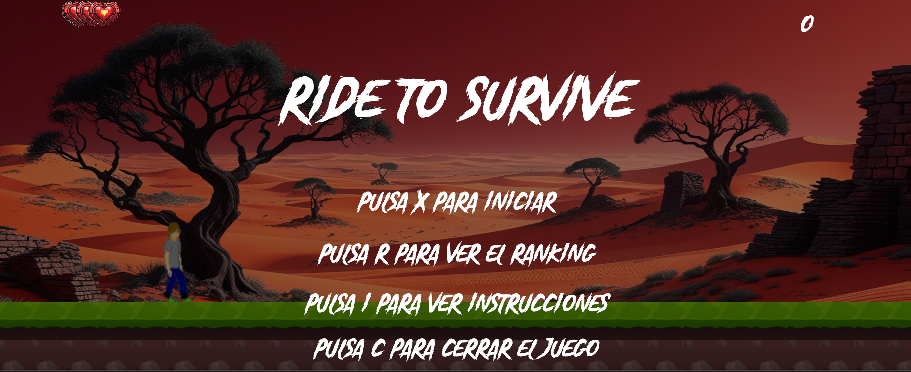Si pulsamos X, iniciamos el juego, R nos muestra el ranking, I nos permite ver las instrucciones y C cierra el juego.
Al pulsar R se mostrará el ranking que está guardado en la base de datos con el nombre y puntuaciones de los jugadores.
Al volver a pulsar R, se cerrará el ranking.
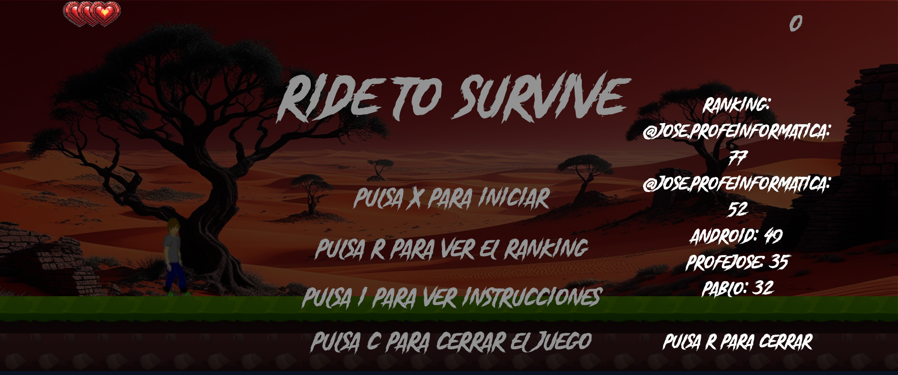Al pulsar I se mostrarán las instrucciones del juego, con información sobre su funcionamiento.
Desde aquí, se puede acceder a una página con detalles adicionales sobre el juego y su historia.
Si se pulsa I de nuevo, se volverá al juego.
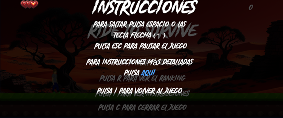Al pulsar X, el juego iniciará.

El personaje iniciará patinando.
En la esquina superior izquierda tenemos las vidas del personaje, que se irán restando cuando choque con los obstáculos.
En la esquina superior derecha tenemos el contador de obstáculos superados, que aumentará a medida que el personaje avance.
Al pulsar la tecla espacio o la flecha hacia arriba, el personaje saltará y evitará los obstáculos.

Podemos pausar el juego pulsando la tecla Esc.
Dentro del menú de pausa, podemos volver al juego pulsando Esc o cerrarlo pulsando C.
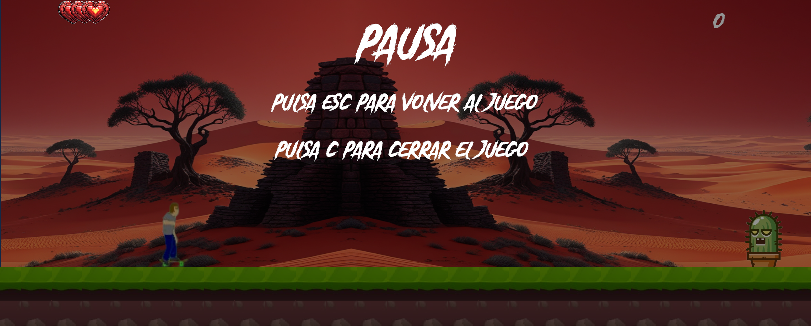El jugador comienza con 3 vidas, que se irán restando cada vez que el personaje choque con un obstáculo.
Después de un choque, el personaje tendrá inmunidad durante unos segundos.


Cuando el personaje se queda sin vidas, se mostrará la pantalla de fin de juego.
En la parte superior derecha, aparecerá el contador de obstáculos superados.
Desde esta pantalla, se podrá reiniciar el juego, cerrarlo o introducir un nombre para guardarlo en la base de datos si se ha obtenido una de las 5 mejores puntuaciones.
También se podrá ver cómo el personaje se convierte en un esqueleto.

Al iniciar el juego tendremos esta pantalla.
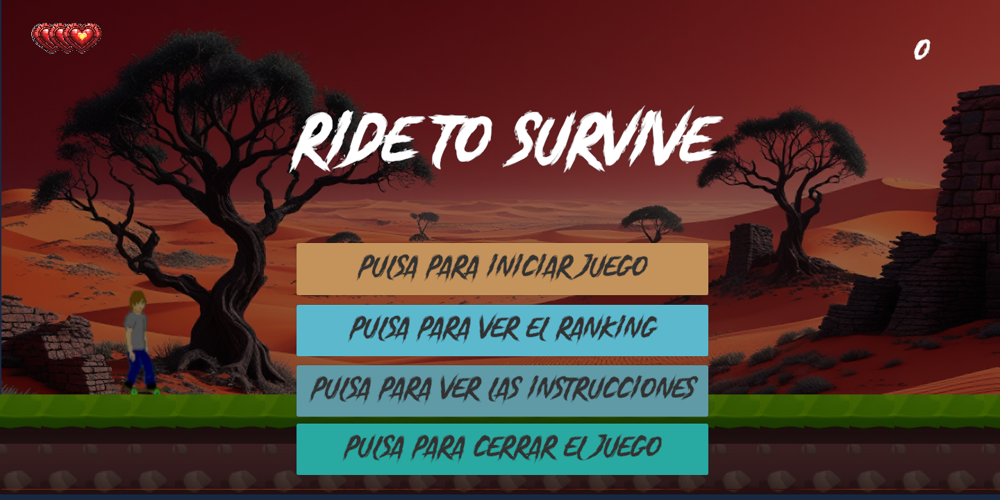Si pulsamos en el primer botón, iniciamos el juego, el segundo nos muestra el ranking, el tercero nos permite ver las instrucciones y el último cierra el juego.
Al pulsar el segundo botón se mostrará el ranking que está guardado en la base de datos con el nombre y puntuaciones de los jugadores.
Al pulsar el botón llamado "Pulsa para cerrar", se cerrará el ranking.
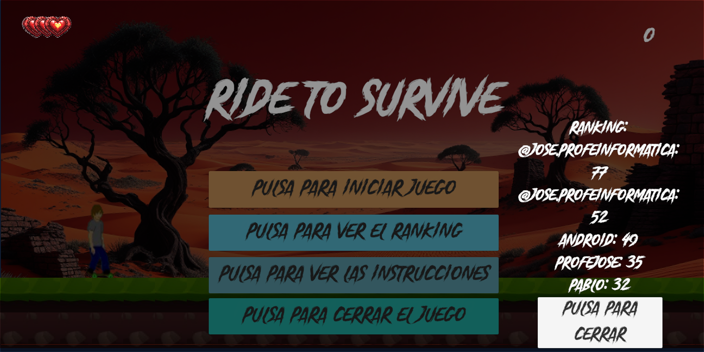Al pulsar el tercer botón se mostrarán las instrucciones, donde podemos ver el funcionamiento de nuestro juego.
Si se pulsa el botón, se cerrará.
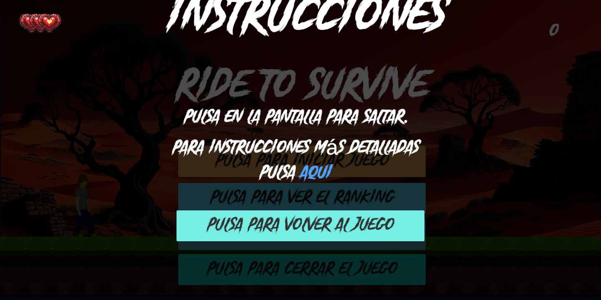Al pulsar el primer botón, el juego iniciará.
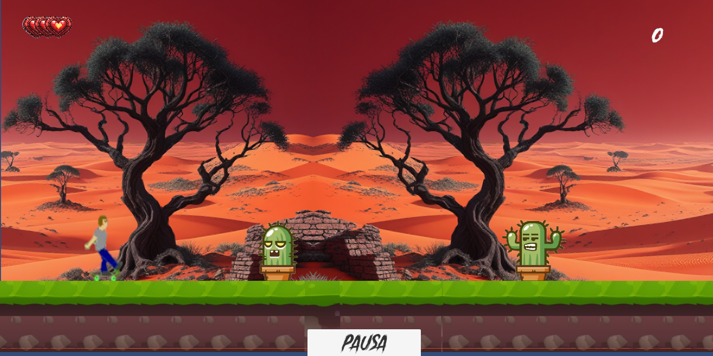Al iniciar el juego, el personaje iniciará patinando.
En la esquina superior izquierda tenemos las vidas del personaje que se irán restando cuando choque con los obstáculos.
En la esquina superior derecha tenemos el contador de obstáculos superados que se irá incrementando a medida que el personaje vaya superando obstáculos.
También tendremos un botón de pausa para pausar el juego.
Al pulsar la pantalla, el personaje saltará y evitará los obstáculos.
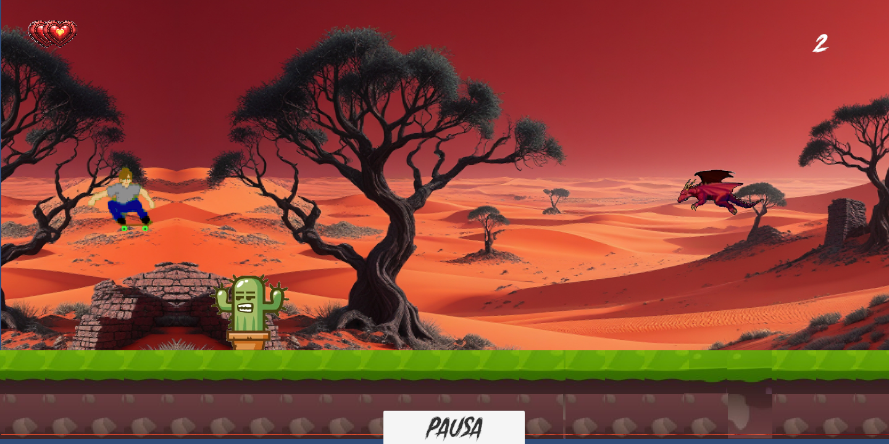Podemos pausar dentro del juego pulsando en el botón.
Dentro de este menú podremos volver al juego pulsando el botón de volver y podemos cerrar el juego pulsando el botón de cerrar.
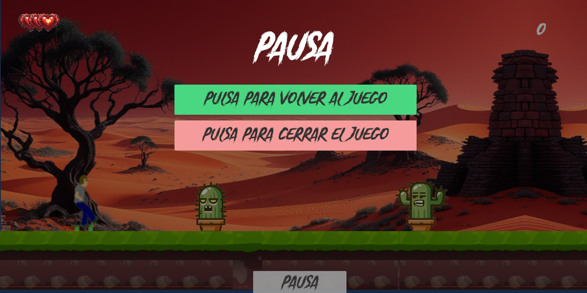Las vidas del usuario serán 3 al principio y se irán restando cada vez que el personaje se choque con los obstáculos.
El personaje tendrá inmunidad durante unos segundos al chocar con el obstáculo.
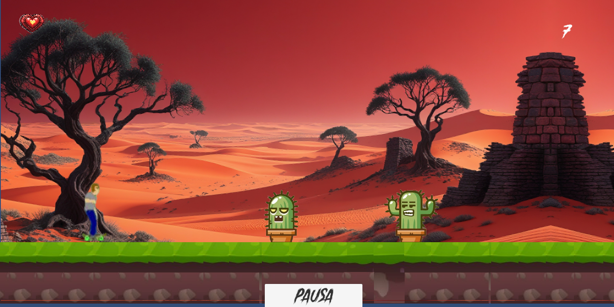Cuando el personaje se queda sin vidas, veremos la pantalla de fin de juego.
En ella, a la izquierda superior derecha tenemos el contador de obstáculos superados y podremos reiniciar el juego, cerrarlo o incluir un nombre para guardarlo en la base de datos.
Si la puntuación está entre las 5 mejores, aparecerá en el ranking.
También podemos ver cómo el personaje se convierte en esqueleto.
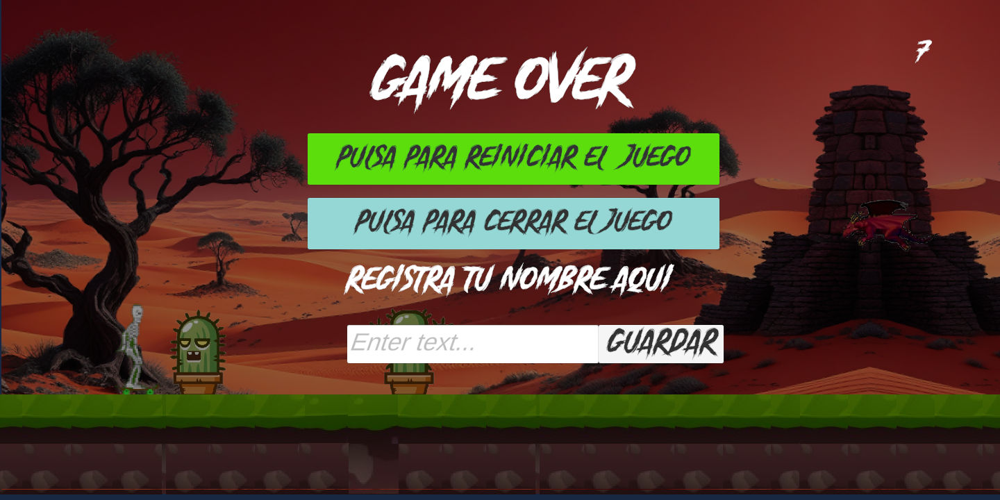El Desierto Escarlata no es un lugar para los débiles. Los que se atreven a cruzarlo enfrentan pruebas que solo los más hábiles pueden superar. En este vasto terreno, tres grandes desafíos esperan a los osados
Un imponente cactus verde que se alza como un muro espinoso en el camino. Es grande y sólido, obligando a esquivarlo con destreza.
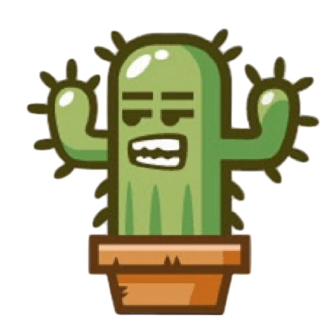Más estrecho pero igual de peligroso, este cactus solitario aparece en lugares inesperados, exigiendo reflejos rápidos para sortearlo.
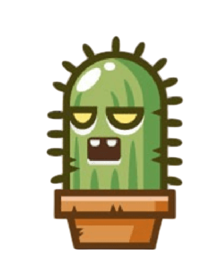Un majestuoso dragón de escamas rojizas que surca los cielos del Desierto Escarlata con vuelos amplios y poderosos. Su sola presencia impone respeto, y aunque no posee poderes especiales, su tamaño y trayectoria a menudo bloquean el camino. Evitar a Ignis requiere precisión, pues un choque con él puede resultar desastroso.
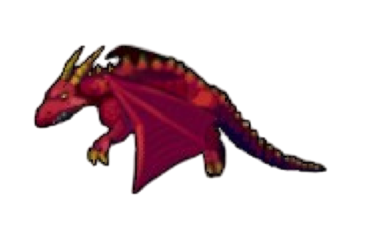Cargando ranking...
| Posición | Nombre | Puntuación |
|---|